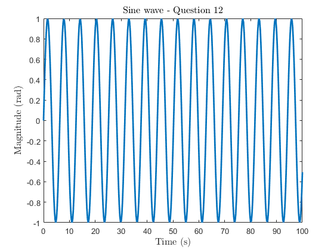
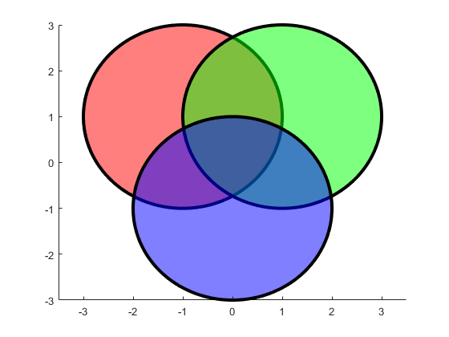

Contents
Author: Chrysostomos Karakasis 702529334
%CIEG 675 LAB#1 %Due Monday January 11, 2021 by 5pm close all; clear all;
Part (1)
%Make a row vector that starts at 1 and ends at 10 with spacing of 0.02. rv_1_1 = 1:0.02:10; %Define starting point, spacing and end point
Part (2)
%Make a 3x3 2D matrix that has the numbers 1 through 9 for entries. %First way %If we want the entries to increase by rows rv_2_1 = [1:3;4:6;7:9]; %Simple "manual" way, where we define each entry %If we want the entries to increase by columns rv_2_2 = rv_2_1'; %Transpose of previous matrix %Alternatively (Second way) rv_2_3 = 1:9; %Define temporary variable with number from 1 to 9 %If we want the entries to increase by columns rv_2_4 = reshape(rv_2_3,3,3); %Reshape previous variable into a 3x3 matrix %If we want the entries to increase by rows rv_2_5 = rv_2_4' %Take transpose of previous matrix
rv_2_5 =
1 2 3
4 5 6
7 8 9
Part (3)
%Define a variable from question 2 data that consists of the diagonal elements. (multiple ways to do this, explore) %First way rv_3_1 = [rv_2_1(1,1) rv_2_1(2,2) rv_2_1(3,3)]; %Simple picking of desired elements %Second way rv_3_2 = diag(rv_2_1)'; %Built-in function provides the diagonal elements of a given matrix. Transpose to get a row vector %Third way rv_3_3 = diag(rv_2_1.*eye(3,3))'; %Element-wise multiplication in identity matrix to isolate diagonal elements. Use of "diag" to get elements in a vector (transpose for line vector) %Fourth way temp = reshape(rv_2_1,1,9); %Reshape 3x3 matrix into a 1x9 vector rv_3_4 = temp(1:4:9) %Take advantage of the relative position of the diagonal elements - Use spacing of 4
rv_3_4 =
1 5 9
Part (4)
%Define a second variable from question 2 data that consists of the elements in the corners of the matrix. %First way rv_4_1 = [rv_2_1(1,1) rv_2_1(1,end) rv_2_1(end,1) rv_2_1(end,end)]; %Simple picking of desired elements %Second way temp = [1 0 1].*rv_2_1.*[1;0;1]; %Isolate the desired elements and so that all others are zeros rv_4_3 = find(temp ~= 0)'; %Find the non-zero elements, which are the corner elements of the initial matrix %Third way temp = [1 0 1; 0 0 0; 1 0 1].*rv_2_1; %Isolate the desired elements and so that all others are zeros rv_4_4 = find(temp ~= 0)' %Find the non-zero elements, which are the corner elements of the initial matrix
rv_4_4 =
1 3 7 9
Part (5)
%Define a third variable from question 2 data that consists of the middle row. rv_5_1 = rv_2_1(round(end/2),:) %Isolate only the middle row
rv_5_1 =
4 5 6
Part (6)
%Define a fourth variable from question 2 data that consists of the last column. rv_6_1 = rv_2_1(:,end) %Isolate only the last column
rv_6_1 =
3
6
9
Part (7)
%Given the following threebathymetry data sets develop a single variable comprised of them that is a 3D matrix, with size 2x2x3. Survey1 = [1 2; 3 4]; % survey 1 Survey2 = [5 6; 7 8]; % survey 2 Survey3 = [9 10; 11 12]; % survey 3 rv_7_1(:,:,1) = Survey1; %Define the first "layer" of the 3D matrix as the survey 1 rv_7_1(:,:,2) = Survey2; %Define the second "layer" of the 3D matrix as the survey 2 rv_7_1(:,:,3) = Survey3; %Define the third "layer" of the 3D matrix as the survey 3 rv_7_1
rv_7_1(:,:,1) =
1 2
3 4
rv_7_1(:,:,2) =
5 6
7 8
rv_7_1(:,:,3) =
9 10
11 12
Part (8)
%Define a variable that has entries extending from 1 to 8 and then also includes entries extending from 15 through 24. rv_8_1 = [1:8 15:24] %First we include the entries from 1 to 8 and then append to that the entries from 15 to 24
rv_8_1 =
Columns 1 through 13
1 2 3 4 5 6 7 8 15 16 17 18 19
Columns 14 through 18
20 21 22 23 24
Part (9)
%Make a time vector that extends from 0:100 by ¼ s intervals. (Suppress output) rv_9_1 = 0:1/4:100; %Define starting point, increment and last point
Part (10)
%Make a column vector that extends from-30 to 30 by increments of 0.2. (Suppress output) rv_10_1 = [-30:0.2:30]'; %Define starting point, increment, last point and use transpose to get a column vector
Part (11)
%Make a column vector that goes from 100 to 0 in descending order. (Suppress output) rv_11_1 = [100:-1:0]; %Define starting point, negative increment and last point
Part (12)
%Make a sine wave of your choice and plot it as a function of time (or you can use the sine wave from question 5). t_vector = rv_9_1; %Use the time vector from Question 9 rv_12_1 = sin(t_vector); %Use the sin built-in function to calculate the sine of the time vector elements in radians figure(1) %Create new figure with the number (1) plot(t_vector,rv_12_1,'linewidth',2); %Plot the sine vector wrt the time vector and use a line width of 2 title('Sine wave - Question 12','fontsize',12,'interpreter','latex') %Define the title of the figure, change the font size to 12 and set interpreter to Latex (optional) xlabel('Time (s)','fontsize',12,'interpreter','latex') %Define the horizontal axis label of the figure, change the font size to 12 and set interpreter to Latex (optional) ylabel('Magnitude (rad)','fontsize',12,'interpreter','latex') %Define the vertical axis label of the figure, change the font size to 12 and set interpreter to Latex (optional)
Part (13)
%Make a parabola of your choice (?=??2) and plot it. Then overlay two more parabolas on the same axes using 0.5?and 2?. %Change the Color and LineType for each. Add a legend to the plot. t_vector = rv_9_1; %Use the time vector from Question 9 a = 1; %Define the alpha of our choice rv_13_1 = a*t_vector.^2; %Initial parabola rv_13_2 = 0.5*a*t_vector.^2; %Parabola with 0.5*a rv_13_3 = 2*a*t_vector.^2; %Parabola with 2*a figure(2) %Create new figure with the number (2) hold on; plot(t_vector,rv_13_1,'r-','linewidth',2); %Plot the first parabola (a) vector wrt the time vector and use a line width of 2 plot(t_vector,rv_13_2,'b--','linewidth',2); %Plot the second parabola (0.5a) vector wrt the time vector and use a line width of 2 plot(t_vector,rv_13_3,'g-.','linewidth',2); %Plot the third parabola (2a) vector wrt the time vector and use a line width of 2 title('Parabolas - Question 13','fontsize',12,'interpreter','latex') %Define the title of the figure, change the font size to 12 and set interpreter to Latex (optional) xlabel('Time (s)','fontsize',12,'interpreter','latex') %Define the horizontal axis label of the figure, change the font size to 12 and set interpreter to Latex (optional) ylabel('Magnitude','fontsize',12,'interpreter','latex') %Define the vertical axis label of the figure, change the font size to 12 and set interpreter to Latex (optional) legend('Parabola \alpha','Parabola 0.5\alpha','Parabola 2\alpha','location','best')

Part (14)
%Write commands to generate the figure shown below. %You may not use any built in matlabfunction for generating circles. You are likely to need some other functions though. %Perhaps fliplr, fill, and the attribute facealpha might help. The circle centers are at (-1,1), (1,1), and (0,-1). %The radius is 2. The linewidth is 3. t_vector = 0:0.01:2*pi; %Angles from 0 to 360 deg radius_14 = 2; %Definition of radius as a variable to make the code robust to changes %First, we will create the three circle polygons %Circle #1 - center (-1,1) c1_x = -1; %Definition of x-coordinate of first circle center as a variable to make the code robust to changes c1_y = 1; %Definition of y-coordinate of first circle center as a variable to make the code robust to changes %We will use polar coordinates to create the circles x1 = c1_x + radius_14*cos(t_vector); %X-coordinates of the points of the first circle derived from the polar coordinates y1 = c1_y + radius_14*sin(t_vector); %Y-coordinates of the points of the first circle derived from the polar coordinates %Circle #2 - center (1,1) c2_x = 1; %Definition of x-coordinate of second circle center as a variable to make the code robust to changes c2_y = 1; %Definition of y-coordinate of second circle center as a variable to make the code robust to changes %We will use polar coordinates to create the circles x2 = c2_x + radius_14*cos(t_vector); %X-coordinates of the points of the second circle derived from the polar coordinates y2 = c2_y + radius_14*sin(t_vector); %Y-coordinates of the points of the second circle derived from the polar coordinates %Circle #3 - center (0,-1) c3_x = 0; %Definition of x-coordinate of first circle center as a variable to make the code robust to changes c3_y = -1; %Definition of y-coordinate of first circle center as a variable to make the code robust to changes %We will use polar coordinates to create the circles x3 = c3_x + radius_14*cos(t_vector); %X-coordinates of the points of the third circle derived from the polar coordinates y3 = c3_y + radius_14*sin(t_vector); %Y-coordinates of the points of the third circle derived from the polar coordinates figure(3) %Create new figure with the number (3) hold on; %Use "hold on" to plot all three circles on the same plot fill(x1,y1,'r','linewidth',3) %Plot the first circle, fill in the inside with the desired color (red) and set line width to 3 fill(x2,y2,'g','linewidth',3) %Plot the second circle, fill in the inside with the desired color (green) and set line width to 3 fill(x3,y3,'b','linewidth',3) %Plot the third circle, fill in the inside with the desired color (blue) and set line width to 3 alpha(0.5) %Set Transparency for All Graphics Objects to half (0.5) axis([-3.5 3.5 -3 3]) %Define manually the axes limits to match the ones in the given plot